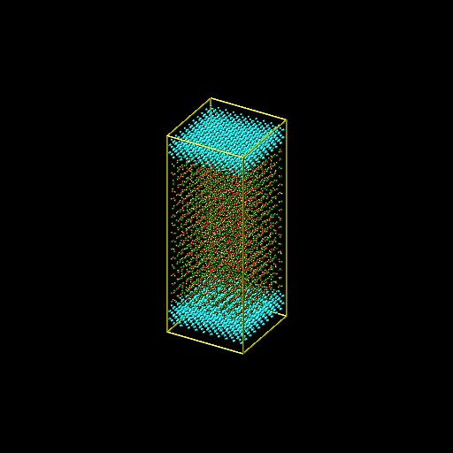

Nanoconfined electrolyte
Molecular dynamics simulation of an aqueous NaCl solution confined between two solid walls

The objective of this tutorial is to use molecular dynamics and simulate an electrolyte confined between two rigid carbon walls. There are several main parts to this tutorial:
- System generation - First, the electrolyte and the two walls are generated using LAMMPS internal commands.
- Minimisation - Seconds, an energy minimisation is performed to bring the system in a more favorable configuration.
- System equilibration - Third, the system is equilibrated at a pressure of 1 atm and temperature of 300 K.
- Density profile measurement - Finally, density profile are extracted using two methods: internal LAMMPS commands and post-processing with Python.
If you are new to LAMMPS, I recommend you to follow this simpler tutorial first.
Click here if you are looking for help with your project, if you want to support me (for free or not), or if you have any suggestions for these tutorials.
System generation
Create a new folder that will contain all the files. Open a blank page using a text editor, and save it in the new folder using the name 'input.01.lammps'. Note that the '.lammps' extension has no importance. Copy the following lines into input.01.lammps:
# Initialisation
units real
atom_style full
bond_style harmonic
angle_style harmonic
pair_style lj/cut/tip4p/long 1 2 1 1 0.1546 12.0
kspace_style pppm/tip4p 1.0e-4Explanations: There are many differences with respect to tutorial 01. With the unit style 'real', masses are in grams per mole, distances in Ångstroms, time in femtoseconds, energies in Kcal/mole. With the atom style 'full', each atom is a dot with a mass and a charge. In addition, each atom can be linked by bonds, angles, dihedrals and impropers potentials (for example to form molecules). The 'bond_style' and 'angle_style' commands define the styles of bond and angle used in the simulation, respectively, and the 'harmonic' keyword imposes the potential to use.
Note: with the rigid water model that is used here, the bond and angle styles are not relevant, but LAMMPS requires them to be specified.
With the 'pair_style' named 'lj/cut/tip4p/long', atoms interact through both a Lennard-Jones (LJ) potential and through Coulombic interactions. This style is specific to four points water model, and automatically accounts for the additional massless site. The six numbers are, respectively,
- 1 - the atom type for the oxygen O of the tip4p water,
- 2 - the atom type for the hydrogen H of the tip4p water,
- 3 - the OH bond type,
- 4 - the HOH angle type,
- 5 - the distance from O atom to massless charge,
- 6 - the cutoff in Ångstroms.
The cutoff applies to both LJ and Coulombic interactions, but in a different way. For LJ 'cut' interactions, atoms interact with each other only if they are separated by a distance smaller than the cutoff. For Coulombic 'long', interaction between atoms closer than the cutoff are computed directly, and interaction between atoms outside that cutoff are computed in reciprocal space. Finally the kspace defines the long-range solver for Coulombic interactions. The pppm style refers to particle-particle particle-mesh. From Luty and van Gunsteren' paper:
The PPPM method is based on separating the total interaction between particles into the sum of short-range interactions, which are computed by direct particle−particle summation, and long-range interactions, which are calculated by solving Poisson's equation using periodic boundary conditions (PBCs).
Let us create the box: copy the following lines into input.01.lammps, after the 'kspace_style' command:
# ------------- System definition
lattice fcc 4.04
region box block -5 5 -5 5 -13 13
create_box 6 box &
bond/types 1 &
angle/types 1 &
extra/bond/per/atom 2 &
extra/angle/per/atom 1 &
extra/special/per/atom 2
Explanations: The 'lattice' command defines the
unit cell. Here 'fcc'
with a scale factor of 4.04 has been chosen for the future
positioning of the carbon atoms in a cubic crystal lattice.
The 'region' command defines a geometric region of space,
and by choosing 'xlo=-5' and 'xhi=5', and because we have
previously chosen a lattice with scale factor of 4.04,
the region 'box' extends from -20.2 to 20.2 Ångström
(units of lengths are in Ångstrom because we have chosen the
unit style 'real'). Finally, the 'create_box' command creates
a simulation box with 6 types of atoms in the simulation:
oxygen and hydrogen atoms of the water, Na, Cl, and the carbon
atoms of the top and bottom walls, respectively. Note that the
carbon atoms of the top and bottom walls will be identical
(same mass, same pairwise interaction, etc.), and the assignment
of two different numbers is for practical purpose.
The create box command extends over 6 lines thanks to the '&'
character. The second and third lines are used to specify that
the simulation with contain 1 type of bond and 1 type of angle
(for the water molecule). The parameters of these bond and
angle constraints will be given later. The three last lines
are for memory allocation.
We can now add atoms to the system. First, we create two
sub-regions corresponding respectively to the two solid walls.
Then we create the atoms of type 5 and 6 within the two
regions, respectively.
# ------------- create the walls
region rbotwall block -5 5 -5 5 -12 -10
region rtopwall block -5 5 -5 5 10 12
create_atoms 5 region rtopwall
create_atoms 6 region rbotwallIn order to add the water molecules, we first need to download the file TIP4P2005.txt and place it in the same folder. It contains all the necessary information about the water molecule, such as positions, bonds, and angle. Then, add the following lines to input.01.lammps:
# ------------- create the fluid
region rliquid block -5 5 -5 5 -9 9
lattice sc 4.04
molecule h2omol TIP4P2005.txt
create_atoms 0 region rliquid mol h2omol 482793Explanations: With the last four lines, a region used to deposit the water is created on the last defined lattice, which is 'fcc 4.04'. Then, on the next line, we define a new simple cubic lattice in order to position the water molecules on it, with a distance of 4.04 Ångstroms between each water molecule (note: the new lattice replaces the previous one, LAMMPS reads a script from top to bottom). Note that 4.04 Ångstroms is larger than the typical equilibrium distance between water molecules in a liquid, but this will allow us to insert ions more safely. Then, the 'molecule' command opens the 'TIP4P2005.txt' file, and name the associated molecule 'h2omol'. Finally, molecules are created on the sc lattice by the 'create_atoms' command. The first parameter is '0' because we use the atom id from the 'TIP4P2005.txt' file. The number '482793' is a seed that is required by LAMMPS, it can be any positive integer. Finally, let us deposit 20 ions (10 Na, 10 Cl) in between the water molecules by adding these two lines to input.01.lammps:
fix mydep1 all deposit 10 3 1 56513 region rliquid near 0.3
fix mydep2 all deposit 10 4 1 58613 region rliquid near 0.3
Each 'fix deposit' will add one ion at a random position
within the 'rliquid' region every timestep. So we can just
make a very short simulation of 10 timesteps and export
the generated configuration. Note that 'mydep1' and 'mydep2'
are the name I choose to give to the fix.
We need to define the parameters of the simulation: the mass
of the 6 atoms (O, H, Na, Cl, C, C), the pairwise interaction
parameters (here the parameters for the Lennard-Jones
potential), and the bond and angle parameters. Copy the
following line into input.01.lammps:
# ------------- settings
include PARM.lammpsCreate a new text file, call it 'PARM.lammps', and copy it in the same folder where 'input.01.lammps' is. Copy the following lines into PARM.lammps:
mass 1 15.9994
mass 2 1.008
mass 3 28.990
mass 4 35.453
mass 5 26.9815
mass 6 26.9815
pair_coeff 1 1 0.185199 3.1589
pair_coeff 2 2 0.0 0.0
pair_coeff 3 3 0.04690 2.4299
pair_coeff 4 4 0.1500 4.04470
pair_coeff 5 5 11.697 3.55
pair_coeff 6 6 11.697 3.55
bond_coeff 1 0 0.9572
angle_coeff 1 0 104.52
Explanations: The parameters for water (mass 1,
mass 2, pair_coeff 1 1, pair coeff 2 2, bond_coeff 1 and
angle_coeff 1) are given by the TIP4P/2005 force field,
the parameters for Na and Cl (mass 3, mass 4, pair_coeff 3 3,
pair_coeff 4 4) are given by the CHARMM-27 force field,
and the parameters for the wall (mass 5, mass 6,
pair_coeff 5 5, pair coeff 6 6) are parameters for Al atoms.
Each 'mass' command assigns a mass in grams/mole to
an atom type. Each 'pair_coeff' assigns respectively
the depth of the potential in Kcal/mole, and the distance
at which the particle-particle potential energy in Ångstrom.
We have only assigned pairwise interaction between atoms of
identical type. By default, LAMMPS calculates the pair
coefficients for the interactions between atoms of type i
and j by using the geometrical rule. Other rules can be
set with the 'pair_modify' command, but for the sake of
simplicity, we are going to keep the default option here.
The bond coefficient (here for the O-H bond of the water
molecule) sets respectively the energy of the harmonic
potential and the equilibrium distance in Ångstrom.
The value is '0' for the energy, because we are going
to use a rigid model for the water molecule. The shape of
the molecule will be preserved by the shake algorithm
(see later). Similarly, the angle coefficient (here for
the H-O-H angle of the water molecule) sets the energy of
the harmonic potential (also 0) and the equilibrium angle
is in degree.
Finally, add the following line to input.01.lammps:
dump mydmp all image 10 dump.*.jpg type type
# ------------- run
run 10
set type 3 charge 1.0
set type 4 charge -1.0
write_data data.01.lammps
Explanations: The 'run 10' requires the
simulation to run for 10 timesteps. The value of the
timestep (1 fs by default) does not matter yet because
the atoms are not moving. We also need to specify the charge
of the newly added ions, which is done using the 'set'
commands. The write 'data_file' finally creates a file named
'data.01.lammps' containing all the information
required to restart the simulation from the final configuration
generated by input.01.lammps. The 'dump' command with the
'image' option will save 'jpg' images of the system.
The first input script is ready to be executed with LAMMPS.
In the terminal
windows, you should see something like that:
LAMMPS (20 Nov 2019)
Lattice spacing in x,y,z = 4.04 4.04 4.04
Created orthogonal box = (-20.2 -20.2 -52.52) to (20.2 20.2 52.52)
1 by 1 by 1 MPI processor grid
Created 1000 atoms
create_atoms CPU = 0.00466238 secs
Created 1000 atoms
create_atoms CPU = 0.000538191 secs
Lattice spacing in x,y,z = 4 4 4
(...)
Per MPI rank memory allocation (min/avg/max) = 35.92 | 35.92 | 35.92 Mbytes
Step Temp E_pair E_mol TotEng Press
0 0 8.5279913e+20 0 8.5279913e+20 1.3643111e+21
10 0 8.5279913e+20 0 8.5279913e+20 1.3643111e+21
Loop time of 1.65591 on 1 procs for 10 steps with 8917 atoms
Performance: 0.522 ns/day, 45.998 hours/ns, 6.039 timesteps/s
99.2% CPU use with 1 MPI tasks x no OpenMP threads
(...)
Neighbor list builds = 10
Dangerous builds = 0
Setting atom values ...
10 settings made for charge
Setting atom values ...
10 settings made for charge
System init for write_data ...
(...)
Total wall time: 0:00:01If the simulation is successfully, a file named 'data01.lammps' should be in the folder, as well as the following snapshot of the system:

Energy minimisation
It is clear from the way the system has been created that the atoms are not at equilibrium distances from each others. Indeed, some of the ions added using the 'fix deposit' commands are too close to the water molecules. If we were to start a 'normal' molecular dynamics simulation now (i.e. solve the equations of motion) with a 'normal' timestep (1 or 2 femto-seconds), the atoms would exert huge forces on each others, as a consequence they would accelerate brutally, and the simulation would fail.
MD simulations failling due to overlapping atoms is extremely common. If it occurs, you can either (1) delete the overlapping atoms or (2) move the atoms to more resonable distances (here we do the second one).
Here we need to find a way to move the atoms and place them in a more favorable position before starting the simulation. This step is called 'energy minimisation', and is often necessary. To do so, let us open a new blank sheet in the same folder, and rename it input.02.lammps. The first lines will be very similar to the previous input file:
# ------------- Initialisation
boundary p p p
units real
atom_style full
bond_style harmonic
angle_style harmonic
pair_style lj/cut/tip4p/long 1 2 1 1 0.1546 12.0
kspace_style pppm/tip4p 1.0e-4
# ------------- System definition
read_data data.01.lammps
# ------------- settings
include PARM.lammpsThe only difference with input.01.lammps is that, instead of creating a box and atoms, we open and read the previously created file 'data.01.lammps' which contains the definition of the simulation box and the positions of the atoms. Next, we are going to create some groups with the different atom types:
group gH2O type 1 2
group gNa type 3
group gCl type 4
group gliquid type 1 2 3 4
group gtopwall type 5
group gbotwall type 6
group gwall type 5 6
neigh_modify exclude group gwall gwall
dump mydmp all atom 1000 dump.02.lammpstrj
Creating groups allows us to apply different dynamics
to the liquid and to the walls. The 'neigh_modify'
command asks to LAMMPS not
to evaluate interactions between the atoms of the walls.
This command is used here because internal
deformations of the walls will not be permitted (rigid walls).
The 'neigh_modify' command is not necessary, but save
computation time. The last line asks LAMMPS to generate
a dump file with the atoms positions.
Let us force the carbon walls to remain rigid
during the simulation:
# ------------- run
# ------------- walls
fix mysf1 gtopwall setforce 0 0 NULL
fix mysf2 gbotwall setforce 0 0 NULL
fix myaf1 gtopwall aveforce NULL NULL 0
fix myaf2 gbotwall aveforce NULL NULL 0
The first fix 'setforce' applies to the group
'gtopwall', which contains all of the atoms of type 5.
This fix cancels the \(x\) and \(y\) components of the forces
applied on the atoms of the group at each timestep.
Therefore, if these atoms have no initial
velocity (which is the case here), they wont move along
\(x\) anf \(y\). These fixes do nothing to the \(z\) components
thanks to the 'NULL' keyword. The first fix 'aveforce'
applies to the group 'gtopwall', and averages all the force
exerted on the atoms of the group over \(z\). As a consequence,
the atoms of the group 'gtopwall' move as a block along \(z\)
(and the same for the bottom wall).
Now, we can include the most important commands for the minimisation:
fix mynve all nve
compute tliq gliquid temp
fix myber gliquid temp/berendsen 1 1 1
fix_modify myber temp tliqThe fix 'nve', which we apply to all atoms, performs constant NVE integration to update positions and velocities of the atoms at each timestep. The 'temp/berendsen' fix rescales the velocities of the atoms of the group liquid (ions + water) every timestep in order to reset the temperature. Since we want to perform a minimisation step, both initial and final temperatures have been chosen equal to 1K. The third parameter is the damping factor, in time units, which determines how rapidly the temperature is relaxed. A damping factor of 1 fs would be too small for a molecular dynamics simulation, but is acceptable for a minimisation step during which we just want the atoms to move slightly from their initial positions. The 'fix_modify' is used to assign the temperature of the group 'gliquid' as calculated by the compute 'tliq' to the Berendsen thermostat.
Without this 'fix_modify', LAMMPS would use the measured temperature of group 'all' as the reference temperature when rescaling the velocities of the atoms of group 'gliquid', which is inconsistent. The simulation would still work without error message, but the temperature of the atoms would be different from the desired value.
If we were to run the simulation as it is, it would fail because nothing maintains the shape of the water molecules (the bond and angle energies are equal to 0). Let us use the shake algorithm in order to apply bond and angle constraints to the water molecules. In addition, let us add a fix 'recenter' in order to maintain the system centered in the middle of the box in the \(z\) direction. The fix recenter has no influence on the dynamics.
fix myshk gH2O shake 1.0e-4 200 0 b 1 a 1
fix myrct all recenter NULL NULL INITFinally, let us choose a very small timestep (because we anticipate that the atoms are initially too close to each others) and run for 1000 timesteps (with the command thermo 1000, thermodynamic info are printed in the terminal every 1000 timesteps).
timestep 0.1
thermo 500
run 5000
write_data data.02.lammpsIn the terminal, you should see that the total energy of the system (fifth column) decreases during the energy minimisation:
Step Temp E_pair E_mol TotEng Press
0 0 105943.88 0 105943.88 178061.22
500 3.161202 -7033.8737 0 -6979.0416 -3364.4997
1000 2.2057861 -8866.4103 0 -8828.1502 -4212.2734
1500 1.7782626 -10038.926 0 -10008.081 -4763.0287
2000 1.6006587 -10847.999 0 -10820.235 -5152.8961
2500 1.5852741 -11446.485 0 -11418.988 -5447.37
3000 1.7011608 -11917.953 0 -11888.445 -5681.5579
3500 1.9695876 -12329.433 0 -12295.27 -5891.3157
4000 2.445561 -12722.314 0 -12679.894 -6098.0218
4500 3.2010334 -13037.534 0 -12982.011 -6250.5859
5000 4.3296591 -13339.374 0 -13264.275 -6393.1841 What you observe by opening the dump file using VMD should resemble this video.
System equilibration
Starting from the final configuration of the minisation step, we can now run the molecular dynamics simulation. Here we are going to let the system evolve freely until it reaches an equilibrium. Let us create a new input file and call it input.03.lammps. Add the following lines:
# ------------- Initialisation
boundary p p p
units real
atom_style full
bond_style harmonic
angle_style harmonic
pair_style lj/cut/tip4p/long 1 2 1 1 0.1546 12.0
kspace_style pppm/tip4p 1.0e-4
# ------------- System definition
read_data data.02.lammps
# ------------- Simulation settings
include PARM.lammps
group gH2O type 1 2
group gNa type 3
group gCl type 4
group gliquid type 1 2 3 4
group gtopwall type 5
group gbotwall type 6
group gwall type 5 6
dump mydmp all atom 1000 dump.03.lammpstrj
# ------------- Run
# ------------- To maintain the wall rigid
fix mysf1 gtopwall setforce 0 0 NULL
fix mysf2 gbotwall setforce 0 0 NULL
fix myaf1 gtopwall aveforce NULL NULL 0
fix myaf2 gbotwall aveforce NULL NULL 0
neigh_modify exclude group gwall gwall
# ------------- Dynamics
fix mynve all nve
compute tliq gliquid temp
fix myber gliquid temp/berendsen 300 300 100
fix_modify myber temp tliq
fix myshk gH2O shake 1.0e-4 200 0 b 1 a 1
fix myrct all recenter NULL NULL INIT
timestep 1.0
thermo 5000
thermo_modify temp tliq
run 50000
write_data data.03.lammps
The two main differences with the previous step are the
timestep (1 fs instead of 0.1 fs) and the thermostating. With
an imposed temperature of 300 K, the fluid is expected to
behave as a liquid. A timestep of 1 fs is classic for these
force fields. Never use a larger timestep except if you have
a good reason to do so. What you observe should resemble
this video.
The 'thermo_modify' ensures that the printed temperature
is the temperature of the liquid, and not the temperature
of the whole system which is lower (because the walls are frozen
and have an effective temperure of 0 K)
Density profile measurement
We are going to take advantage of our equilibrated configuration and measure the density profiles of Na and Cl ions. First, let us create another input file and call it input.04.lammps. It is the same input file as input.03.lammps, but it starts from the equilibrated configuration data.03.lammps:
# Initialisation
boundary p p p
units real
atom_style full
bond_style harmonic
angle_style harmonic
pair_style lj/cut/tip4p/long 1 2 1 1 0.1546 12.0
kspace_style pppm/tip4p 1.0e-4
# System definition
read_data data.03.lammps
# Simulation settings
include PARM.lammps
group gH2O type 1 2
group gNa type 3
group gCl type 4
group gliquid type 1 2 3 4
group gtopwall type 5
group gbotwall type 6
dump mydmp all atom 1000 dump.04.lammpstrj
# Run
fix mysf1 gtopwall setforce 0 0 NULL
fix mysf2 gbotwall setforce 0 0 NULL
fix myaf1 gtopwall aveforce NULL NULL 0
fix myaf2 gbotwall aveforce NULL NULL 0
neigh_modify exclude group gtopwall gtopwall
neigh_modify exclude group gbotwall gbotwall
fix mynve all nve
compute tliq gliquid temp
fix myber gliquid temp/berendsen 300 300 100
fix_modify myber temp tliq
fix myshk gH2O shake 1.0e-4 200 0 b 1 a 1
fix myrct all recenter NULL NULL INIT
timestep 1.0
thermo 5000
thermo_modify temp tliq
run 50000
write_data data.04.lammpsThen, with a Python script, we are going to read the atom trajectories using MDAnalysis, and extract the density profiles using MAICoS. See the documentations for MDAnalysis and MAICoS for installation. Open a python script, and import the following modules:
import MDAnalysis as mda
import maicos
import matplotlib.pyplot as pltThen, create a MDAnalysis universe, and isolate the Na and Cl ions by creating groups.
u = mda.Universe("dump.04.lammpstrj", topology_format='LAMMPSDUMP')
grp_Na = u.select_atoms('type 3')
grp_Cl = u.select_atoms('type 4')Then, let us use the density_planar module of MAICoS to extract the density profiles, and finally plot it.
dplanCl = maicos.density_planar(grp_Cl)
dplanCl.run()
zcoorCl = dplanCl.results['z']
densCl = dplanCl.results['dens_mean']
dplanNa = maicos.density_planar(grp_Na)
dplanNa.run()
zcoorNa = dplanNa.results['z']
densNa = dplanNa.results['dens_mean']
plt.plot(zcoorCl,densCl)
plt.plot(zcoorNa,densNa)Going further
Non equilibrium measurement
You can measure the transport properties of the nanoconfined elecrolyte by applying a force to the fluid, and measuring the flux in the direction of the force.
Hydrogen bond analysis
Using MDAnalysis, you can measure the number and duration of the hydrogen bonds.
Click here if you are looking for help with your project, if you want to support me (for free or not), or if you have any suggestions for these tutorials.